Every module, illustrated.
One reasoning engine that aligns retrieval, reasoning, and validation so every result is clear, traceable, and fast.
BiRAGAS
Moving together is not causing
CorrelationBoth move. Neither explains.
CausationOne moves, then the other follows.
Aim at the passenger and the trial fails.
BiRAGAS
One engine, 25 modules
Causal calculusCausal DAG builderCausalityCentrality calculatorGWAS / Mendelian randomizationIn silico perturbation (patient)In silico perturbation (population)SIGNOR causalityDeconvolutionDEG analysisGene prioritizationGSEA pathway enrichmentMulti-omics analysisPathway enrichmentSingle-cell analysisTemporal analysis (bulk)Temporal Granger analysisTotal RNA pipelineCohort retrievalCRISPR Perturb-seqCRISPR screeningCRISPR targeted / ampliconData harmonizationFASTQ processingPerturbation analysis
25
MODULES
MODULES
BiRAGAS
3 tiers
T1
Causal / Drug Target Stack
- Causal calculus
- Causal DAG builder
- Causality
- Centrality calculator
- GWAS / Mendelian randomization
- In silico perturbation (patient)
- and 2 more
T2
Core analysis
- Deconvolution
- DEG analysis
- Gene prioritization
- GSEA pathway enrichment
- Multi-omics analysis
- Pathway enrichment
- and 4 more
T3
Data & processing
- Cohort retrieval
- CRISPR Perturb-seq
- CRISPR screening
- CRISPR targeted / amplicon
- Data harmonization
- FASTQ processing
- and 1 more
BiRAGAS
The 8 causal engines
Causal calculus
Causal DAG builder
Causality
Centrality calculator
GWAS / Mendelian randomization
In silico perturbation (patient)
In silico perturbation (population)
SIGNOR causality
8Tier one
BiRAGAS
6 steps to a claim
Data Ingestion & Validation
Temporal Causality Analysis
Network Inference
Perturbation Analysis
Evidence Integration
Statistical Validation
Step 1 of 6
Data Ingestion & Validation
Data Ingestion & Validation
Temporal Causality Analysis
Network Inference
Perturbation Analysis
Evidence Integration
Statistical Validation
Data Loading & ValidationNormalization StrategiesBatch Effect CorrectionQuality ControlTechnical Artifact Handling
Step 2 of 6
Temporal Causality Analysis
Data Ingestion & Validation
Temporal Causality Analysis
Network Inference
Perturbation Analysis
Evidence Integration
Statistical Validation
Time Series TrajectoryLagged CorrelationGranger CausalityTransfer EntropyTemporal Precedence
Step 3 of 6
Network Inference
Data Ingestion & Validation
Temporal Causality Analysis
Network Inference
Perturbation Analysis
Evidence Integration
Statistical Validation
Network ConstructionEdge DirectionalityPathway-Disease ConnectivityHub Gene IdentificationInformation Flow Metrics
Step 4 of 6
Perturbation Analysis
Data Ingestion & Validation
Temporal Causality Analysis
Network Inference
Perturbation Analysis
Evidence Integration
Statistical Validation
L1000 & DepMap IntegrationCRISPR Screen AnalysisDose-Response ModelingPerturbation SimilarityTherapeutic Target Assessment
Step 5 of 6
Evidence Integration
Data Ingestion & Validation
Temporal Causality Analysis
Network Inference
Perturbation Analysis
Evidence Integration
Statistical Validation
Evidence Quality AssessmentBayesian IntegrationWeighted AveragingConfidence EstimationInterpretable Results
Step 6 of 6
Statistical Validation
Data Ingestion & Validation
Temporal Causality Analysis
Network Inference
Perturbation Analysis
Evidence Integration
Statistical Validation
Permutation TestingFDR ControlBootstrap ConfidenceCross-ValidationFinal Significance Metrics
BiRAGAS
7 phases ahead
1
Foundations
2
KG Embeddings & Retrieval
3
GNNs for Reasoning
4
Causal Discovery
5
Multi-Disease GNNs
6
Patient-level / Temporal GNNs
7
Productionization & Governance
BiRAGAS
259 documented pathways
0pathways
0indications
0targets
0drugs
Every one of the 259 carries a trial identifier and a citation.
BiRAGAS
105 mechanisms, drawn
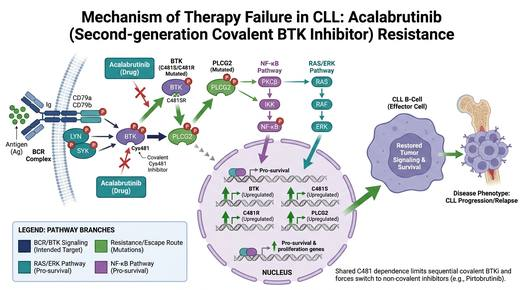
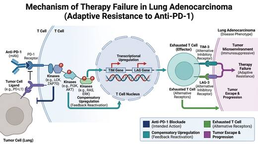
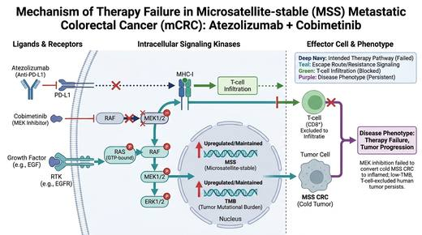
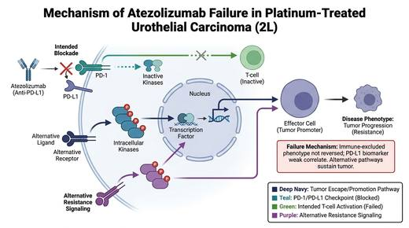
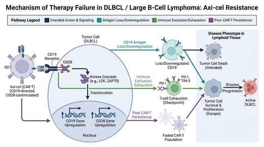
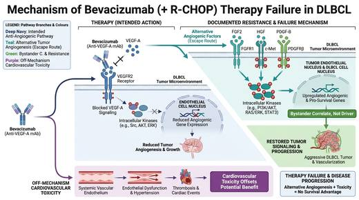
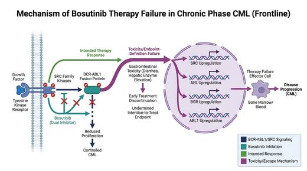
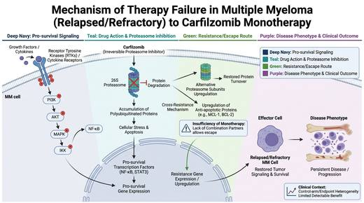
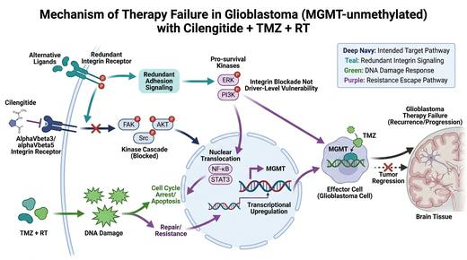
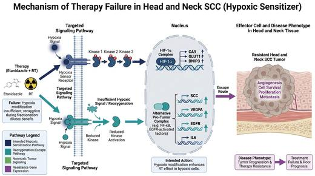
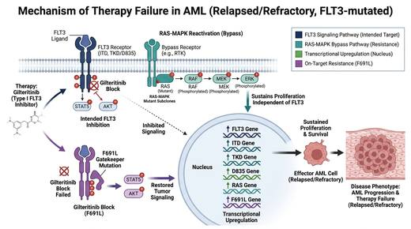
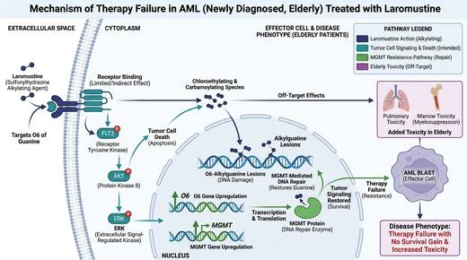
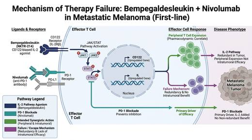
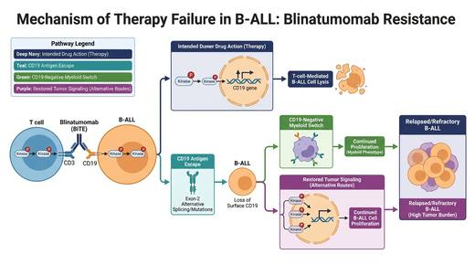
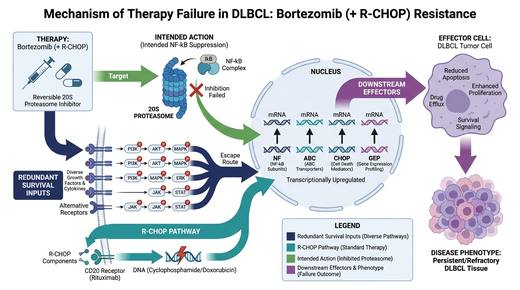
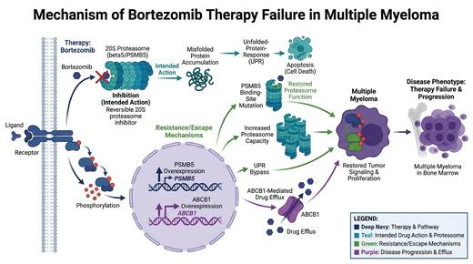
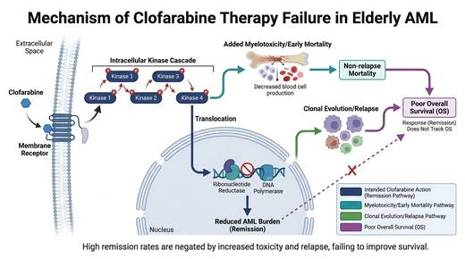
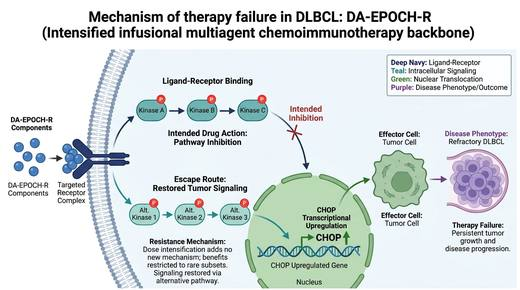
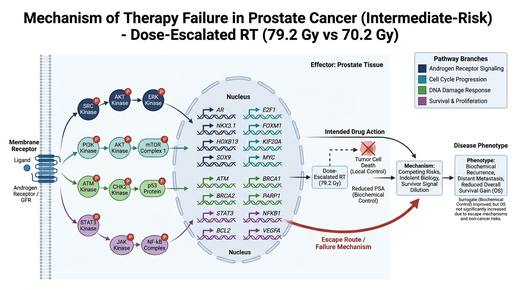
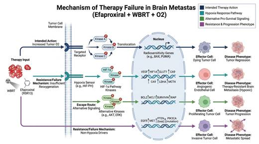
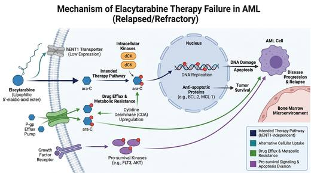
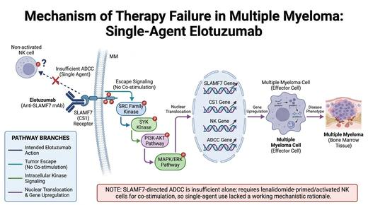
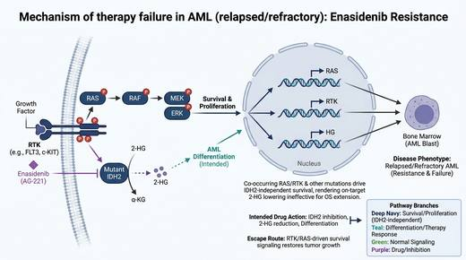
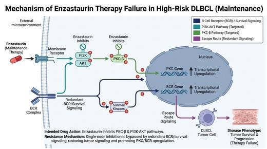
The honest part
What is not true yet
•There is no revenue yet.
•There are no paying customers yet.
•The validation is strong on method and growing on outcome.
•The platform is built. It is not yet a regulated clinical product.
The refusal to overstate is the product.
Dr Mohamad Ayass · mayass@ayassbioscience.com
▶
Every module, narrated
17 scenes, 4 minutes, with sound